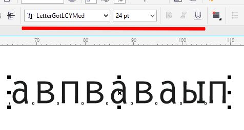
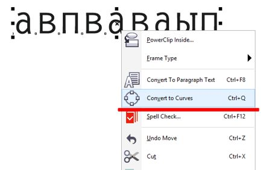
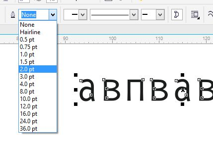
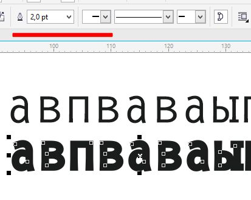

ВОПРОС / ОТВЕТ ДЛЯ НАЧИНАЮЩИХ
polzovatel-902 / 13.07.2010, 09:21/00:41
Форум:
Объясню на примере, чтоб было понятней... Открываю в кореле картинку (футболку с надписью) в формате JPG, мне нужно вытянуть из футболки надпись, т.е разъеденить файл... Говорят нужно формат изменить, еще что-то... Объясните, пожалуйста, что нужно сделать для этого...? Заранее спасибо.
FCSD, Внешняя ссылка
Sancho,
неужели нельзя стандартными инструментами это сделать...
1. можно выделить первый объект, изменить размер, а потом нажимать Ctrl-R для повтора операции, выделяя каждый следующий объект; 2. можно все объекты расположить друг под другом, выровнять по левой стороне, выделить всю группу и один раз вписать нужный размер в окошко трансформации
При выделении и открытии нескольких файлов они выстраиваются так что последним открывается файл с бОльшим номером. Можно ли сделать чтобы файлы открывались в порядке не 3,2,1, а 1,2,3 ?
Вопрос по буквице. Хотел спросить, а есть вариант сделать буквицу из 2-х первых символов (к примеру в начале абзаца стоит двузначное число и т. д,), я что-то не нашел такого.
Как открывать страницы от старшей к младшей ?
Когда Корел открывает страницы, он их ставит по возрастанию, самую "старшую" последней. У меня по одной странице в файле. Файлы как и страницы имеют одинаковую маркировку - название файла 4.5 и страница также 4.5, название файла 4.6 и страница также 4.6. Корел их ВСЕГДА открывает 4.5 потом 4.6 как бы я их при открытии не выделял. А мне надо наоборот. Можно ли изменить порядок.
Помогите, пожалуйста! У меня такая задача: нужно вырезать имя на плоттере. Для этого набираю имя определенным шрифтом и перевожу в кривые. Проблема в том, что в этом шрифте нет опции жирным. А мне надо жирным. Т.е. мне надо, чтобы это имя в кривых было на 2 pt толще. Как это сделать?
aleka.a_inbox.ru, попробуйте увеличить толщину абриса, должно получиться.
Baryga88, не вводите девушку в заблуждение. Здесь поможет инструмент Contour Tool (Интерактивный контур). После этого надо разъединить оригинальный текст и контур (Ctrl+K). Текст удалить.
blizzz. Чем же я ввел девушку в заблуждение??? Смотрим, как это делается, если Вы не в курсе. Я выбрал шрифт, в котором нет жирного начертания (рис. 1)

Переводим в кривые (рис. 2)

Теперь на Панели свойств можно задать нужную толщину абриса (рис. 3). По умолчанию изначально толщина имеет значение None (Нет). Можно толщину изменять и в мм, т. к. по умолчанию абрис тоже в миллиметрах, но чтобы менять толщину в пунктах нужно прежде в окне Outline Pen поменять единицы измерения.

Сравниваем полученный текст с оригинальным (рис. 4).

И где здесь ввод в заблуждение??? Или толщина шрифта по вашему не изменилась???
Страницы